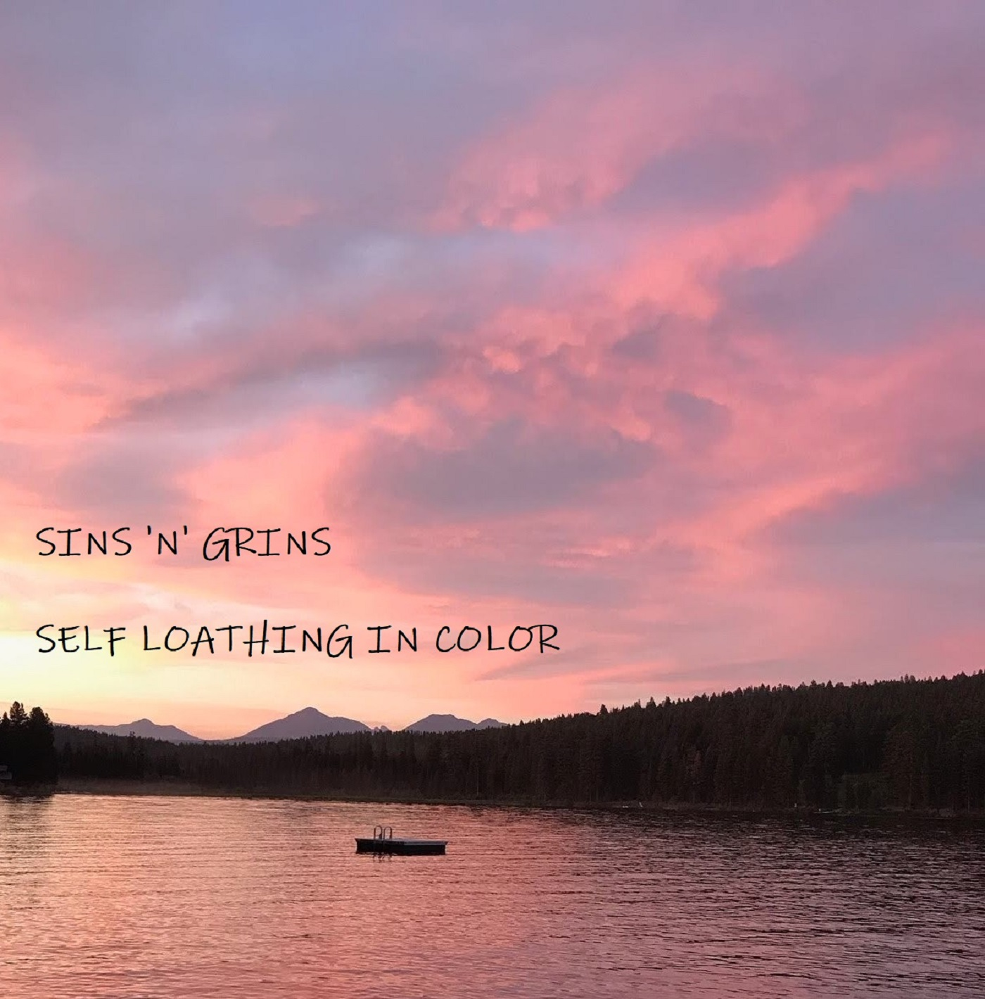
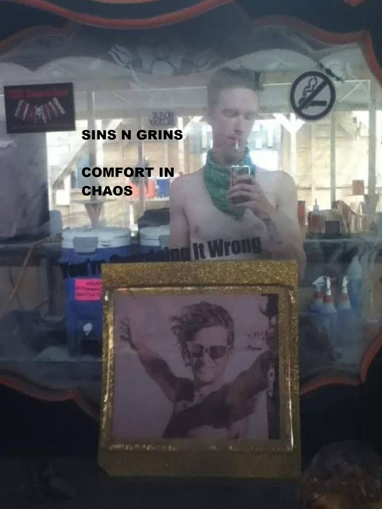

Sins N Grins
Sins N Grins is the solo project of Brian Scherner, a 28 year old musician from Portland, Oregon.

Discography
Self Loathing in Color
This is the first complete album I have ever recorded, and I also consider it my best work. I recorded it in about two months. Even though it was an entirely acoustic release, I learned just how arduous recording an album can be! I spent many mornings and nights recording tracks obsessively, sometimes easily racking up over 100 recordings for each song. With my hands throbbing, fingers burning, and stomach growling from working for hours with no breaks, I learned that sometimes imperfect recordings can actually be the best recordings. That helped me mellow out and to stop fretting so much over things as minor as a buzzing string or a creaking chair. Recording this album was one of the most rewarding things I have done in my free time and I am immensely proud of it. The best songs are "Cigarettes", "I'm Too Lazy for Revolution", "Suffering", and "Time Flies".
Fright of Flight
This is my most recent release, which came out in April 2022. I decided to double-track my vocals on this song, which made for a richer, fuller sound. The song describes the strong anxiety and existential dread that I often feel when I wake up in the morning. It was also featured on a podcast called Folk Punk Pod, which meant a lot to me and marked one of the first times where my music was broadcasted to a wider audience. As an independent songwriter, it can be really frustrating trying to have your music heard by people since there is just so much of it out there. It's always nice when someone loves your art!
Comfort in Chaos Pt 1
This is the first EP I have ever recorded, which also includes the first songs I have ever written. It was followed by a second EP released a couple of months later. Although there are certainly a lot of things I would change about these EP's, I still take a sense of pride in them because they are the first songs I ever introduced to the world. These EP's carry a lot of meaning for me. They represent times in my life that, although they were long ago, I am still processing and working through to this day. The songs on these two EP's deal with trauma, addiction, self loathing and destitution. Thankfully I am not experiencing these things anymore, but they had a major affect on me as a person and writing songs about it is one of the main ways that I have learned to cope with them.
Comfort in Chaos Pt 2
Part 2 of my "Comfort in Chaos" EP.